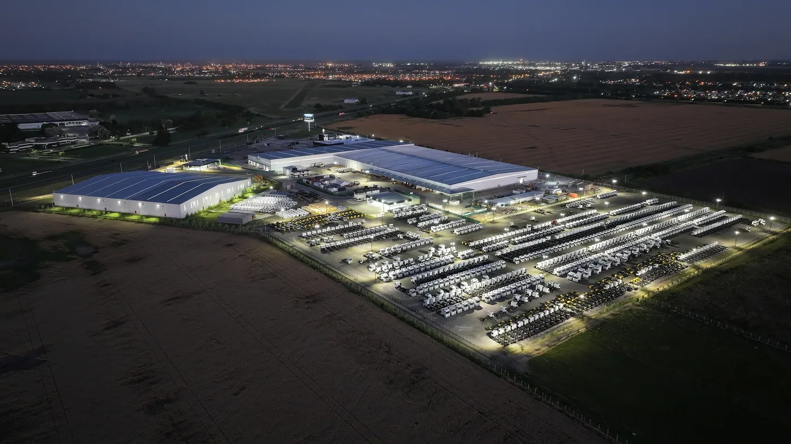

Mercedes-Benz Camiones y Buses difundió el 7 de septiembre de 2026 la conmemoración de sus 75 años de trayectoria en Argentina. La fecha remite al 6 de septiembre de 1951 y recupera una historia que atraviesa generaciones de transportistas, conductores y talleres.
La cobertura del aniversario vincula ese recorrido con el Centro Industrial Zárate, desarrollado mediante un ciclo de inversiones de USD 110 millones. El complejo reúne producción de camiones y chasis de buses, logística de autopartes y repuestos y la planta REMAN. La novedad de esta semana es la conmemoración; la inauguración del centro fue anunciada en mayo.
El repaso histórico incluye al L 3500 y al 1114, junto con las actuales líneas Accelo y Atego. También sitúa el aniversario dentro de un año especial para la marca: se cumplen 130 años del primer camión de Gottlieb Daimler. Son escalas diferentes de una misma trayectoria, global y argentina.
Una historia que se reconoce en el trabajo cotidiano
Análisis de Zabala Repuestos. Para quienes viven del transporte, la historia de una marca también se conserva en experiencias concretas: el primer vehículo de una empresa familiar, una reparación que permitió continuar un viaje o un modelo que acompañó el crecimiento de un taller.
Por eso, un aniversario industrial puede leerse más allá de una fecha. Invita a pensar cómo se transmite el conocimiento entre generaciones y qué hace falta para sostener un vehículo durante años. El camión une producción, mantenimiento y uso de una manera especialmente visible.
La fábrica es una parte de un recorrido más largo
La salida de una unidad de la línea de producción marca el comienzo de su vida de trabajo. Después aparecen servicios, consultas, cambios de aplicación y necesidades de piezas. La experiencia del propietario depende de cómo se conectan esas etapas.
Desde esa perspectiva, resulta interesante observar juntos los espacios de producción, logística y atención del parque. Una empresa de transporte necesita respuestas durante todo el ciclo del vehículo, desde la preparación inicial hasta las intervenciones que permiten seguir utilizándolo.

Conservar experiencia y actualizar conocimientos
En un taller pueden convivir consultas sobre vehículos de distintas épocas. Esa diversidad exige aprovechar la experiencia sin convertirla en una respuesta automática. Una solución conocida para un modelo puede necesitar otra verificación cuando cambian la versión o el sistema instalado.
La formación tiene un papel práctico: ayudar a identificar lo que se sabe, lo que debe consultarse y lo que requiere documentación específica. Compartir procedimientos y antecedentes permite que el conocimiento no dependa siempre de la memoria de una única persona.
El repuesto correcto empieza por la identificación
Al consultar una pieza, conviene reunir chasis, modelo, versión y referencia del componente cuando esté disponible. Una fotografía puede complementar esos datos, especialmente si permite ver identificaciones, conexiones o características relevantes para la consulta.
Para un vehículo con muchos años de uso también interesa conservar los antecedentes de intervenciones. Esa información ayuda al taller a entender qué está instalado y evita que una suposición sobre el equipamiento original se transforme en un pedido incorrecto.
El respaldo se aprecia cuando hace falta una respuesta
Un transportista suele evaluar la atención por su claridad: quién recibe la consulta, qué datos necesita y cuándo habrá una definición. Incluso cuando una solución requiere tiempo, comunicar el estado del trabajo permite organizar el servicio y conversar con el cliente de la carga.
La misma lógica vale para el mantenimiento programado. Registrar lo realizado, conservar las referencias y explicar las próximas revisiones ayuda a dar continuidad a la atención. Son prácticas sencillas que permiten aprovechar mejor la experiencia acumulada con cada unidad.
Un aniversario para mirar también hacia adelante
La renovación del transporte plantea nuevas necesidades, pero mantiene una pregunta conocida: cómo lograr que cada camión cumpla su función de manera sostenida. Producción, conocimiento técnico y abastecimiento forman parte de esa respuesta y merecen observarse en conjunto.
Los 75 años ofrecen una ocasión para reconocer a quienes construyeron esa relación con el vehículo. Para ampliar el recorrido histórico, en el blog también están las notas sobre el Mercedes-Benz 1114 y el Mercedes-Benz L 1620. Cada historia aporta otra mirada sobre el transporte que sigue trabajando en Argentina.